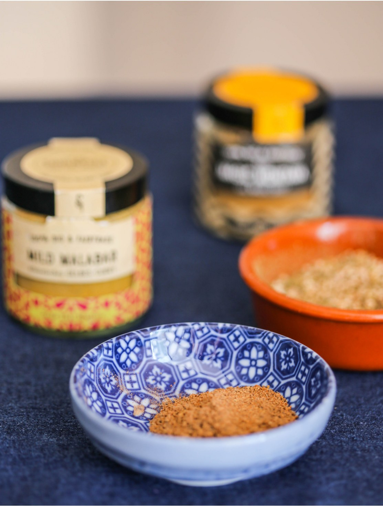

Современная кулинария без специй немыслима, потому что они волшебным образом способны превратить простые и пресные блюда в яркие и аппетитные. Неслучайно именно за этим драгоценным грузом отправлялись караваны судов, которые в итоге открывали новые земли в Азии и Америке. Специи и по сей день входят в число самых дорогостоящих продуктов, но так как используются в очень малых количествах, доступны абсолютно всем.
Важный момент: давайте разберемся, что такое специи и приправы, чем они отличаются? Специи добавляют для аромата в очень малых количествах, а приправы — для вкуса и в больших количествах. Поэтому перец — это специя, а соль, сахар, уксус или горчица — приправы. Есть еще разряд пряных трав, которые часто относят к специям, но мы не будем смешивать эти понятия.
Многие члены клуба попросили рассказать про соль. Вкратце расскажу, какую соль предпочитаю сама и рекомендую всем. Во-первых, соль должна быть качественной и натуральной, то есть морской или хорошей каменной. Во-вторых, в составе не должно быть ничего, кроме самой соли. В-третьих, соль должна быть не йодированной, так как добавление йода придает ей неприятный металлический привкус. Что же касается гурмэ-соли, типа малдонской, флер-де-сель, соли хлопьями, — это соль не для готовки, а для украшения и подачи.
Многие почему-то считают специи второстепенным ингредиентом и не обращают внимания на их качество. А ведь именно в случае со специями качество невероятно важно! Поэтому здесь особенно актуальны проверенные производители, лучше такие, кто занимается только специями, и с безупречной репутацией.
В области специй, как нигде, много подделок, так как это дорогостоящий продукт. Вот главные советы: покупать у проверенных производителей; приобретать небольшие количества; избегать подозрительно дешевых специй; не покупать специи на рынках и в развес; выбирать по возможности целые специи, а не молотые.
Чрезвычайно важно найти проверенного поставщика, которому вы доверяете. Отличным местом для заказа качественных специй являются онлайн-магазины. В разных странах свои проверенные бренды. В Москве, например, смело могу рекомендовать Сергея Ежова и его компанию Kampot Pepper. В Германии и, скорее всего, во всей Европе, можно уверенно покупать специи таких двух прекраснейших немецких брендов, как SpiceBar и SoulSpice.
Выбрав достойного поставщика, закажите небольшое количество специй и оцените их. Прежде всего, визуально: у качественных специй цвет должен быть равномерным и одинаковым. Если вы видите в одной упаковке частицы специй разного оттенка, это говорит о том, что либо сырье было собрано слишком рано, либо специю неправильно хранили.
Сероватый налет и приглушенный, будто выцветший оттенок говорят о том, что нарушены сроки хранения, специя «старая». Например, у хорошего кардамона яркий салатовый цвет, который со временем бледнеет. Специи со временем лучше не становятся. Поэтому покупайте понемногу, на месяц-два, максимум на полгода.
Покупая специи на развес, вы рискуете получить некачественный товар. Самые яркие примеры подделок: кассия, которую выдают за корицу, имеретинский шафран вместо настоящего. В молотый красный перец подсыпают толченый кирпич, в молотый черный — золу, измельченные косточки от маслин и даже землю. Поэтому фотографируйте всю эту красоту на здоровье, но покупайте специи фабрично упакованные, в герметичных емкостях.
Выбирая целые специи, вы рискуете гораздо меньше, чем при покупке молотых. Во-первых, подделать бутончики гвоздики, звездочки бадьяна или коробочки кардамона невозможно. Во-вторых, целые специи хранятся заметно дольше молотых. В-третьих, молоть специи несложно — можно делать это в специальной мельнице, в кофемолке или растирать пестиком в небольшой ступке (самый простой и удобный вариант: каменная, тяжелая, с шероховатой внутренней поверхностью).
Отдельно следует сказать о специях, которые можно и нужно покупать молотыми. Это куркума, паприка, сумах и имбирь.
Все сухие специи требуют одинаковых условий хранения: в плотно закрытой посуде (поэтому я никогда не храню их в пакетиках, а пересыпаю в герметично закрывающиеся банки), в сухом, темном и прохладном месте (чтобы не отсырели и не окислились).
Емкости для специй могут быть стеклянными, пластиковыми, металлическими или деревянными. У каждого варианта свои плюсы и минусы. Стекло прозрачное, в нем хорошо видно специи, но через стекло проникает свет, поэтому стеклянные емкости со специями лучше хранить в шкафчике. Пластик неплохой вариант, он не бьется, защищает от света, но должен быть качественным, ВРА (без бисфенола-А). Металлические баночки — мои любимые, они сделаны из химически нейтрального металла, легко моются, вечные в эксплуатации, не бьются и не пропускают свет. Наименее удобны деревянные емкости: они «дышат», а потому через них могут проникать влага и посторонние запахи.
Обычно хранить специи в холодильнике не рекомендуют, потому что велика вероятность, что они отсыреют. Сколько хранятся специи? Полгода — максимальный срок хранения молотых специй, а целые могут храниться дольше, до года. Как определить, что специя «состарилась»? Самый простой способ: разотрите немного пальцами и понюхайте. Если запах слабый, пора выбрасывать.
Как правило, в повседневной готовке мы придерживаемся какого-то одного стиля, для которого достаточно базового набора специй. Дополнительные нужны тогда, когда вы экспериментируете с блюдами национальных кухонь, например, индийской или тайской.
У меня на кухне чаще всего используются следующие специи: качественный черный перец горошком, молотый острый красный перец, хлопья перца чили, душистый перец, паприка (сладкая и копченая), мускатный орех, кумин, куркума, кориандр, молотый имбирь, сушеный чеснок, лавровый лист, гвоздика, кардамон, корица, бадьян.
Из смесей я активно использую заатар, реже хмели-сунели и уцхо-сунели, и то только тогда, когда готовлю блюда грузинской кухни. Из необычных специй я постоянно использую копченый перец и перец, замоченный в виски. Нашла в Берлине волшебный черный кумин (узбекский), он намного круче обычного — я всегда добавляю его, когда готовлю баранину или плов.
Так как специи добавляются в блюда в очень малых количествах, существует проблема с тем, как их правильно отмерить. Мой совет: добавляйте специи по щепотке, понемногу. Наблюдайте, оценивайте вкус и аромат, запоминайте идеальное именно для вас количество, и очень быстро придет «шестое чувство», которое подскажет, сколько нужно взять той или иной специи.
У каждой специи свой характерный вкус и аромат, поэтому они не взаимозаменяемы. Если в рецепте вам встретилась специя, которой под рукой нет, лучше вообще исключить ее из списка. Но, как всегда, из правила есть исключения. Так, любой острый красный перец можно заменять аналогами. Схожий ароматический профиль имеют анис и бадьян.
Если вы новичок в кулинарии или пока не особо используете специи, экспериментировать с их добавлением я бы не советовала. Велик риск испортить блюдо, на которое вы потратили время, силы и деньги.
Специи добавляются в блюда на разных этапах. Можно заранее замариновать с ними мясо или птицу. Или добавить специи в кастрюлю одновременно со всеми ингредиентами бульона. Или посыпать специями блюдо ближе к концу процесса тушения. Есть и другие варианты, например, обжарка специй для соуса, в котором затем тушатся ингредиенты, как в индийском карри. Момент добавления зависит не от вида специи, а исключительно от рецепта.
Как подготовить специи для добавления в блюдо? В некоторых случаях достаточно просто положить их в целом виде. Если используете молотые специи, лучше не сыпать их прямо из баночки над кастрюлей, так как внутрь емкости может попасть пар. Я заранее открываю баночки, кладу рядом чайные ложки, но ставлю их чуть подальше от плиты.
Если готовите блюдо в индийском или ближневосточном стиле, скорее всего, в рецепте вам будет предложено обжарить специи. Это делается на среднем огне в небольшой сухой сковородке. Внимательно следите за процессом: прогревайте, часто встряхивая сковородку, как только появился характерный аромат — снимайте с огня и тут же пересыпайте в миску. На горячей сковородке специи продолжают готовиться и могут быстро сгореть.
Обжаривание специй имеет несколько причин: так из них лучше выделяются ароматические масла, они подсушиваются и их становится легче растирать в ступке.
Когда речь идет о жарке, есть тонкий момент: специи легко сгорают, поэтому, например, перчить стейк мы рекомендуем уже после того, как он будет готов, иначе вы рискуете получить сгоревший горький перец, ведь стейки жарят на сильно разогретой поверхности.